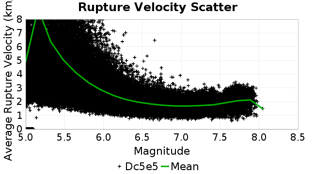
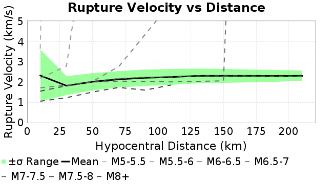
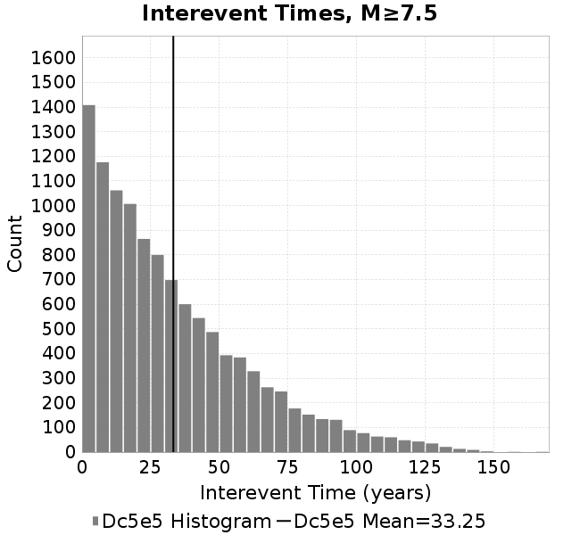
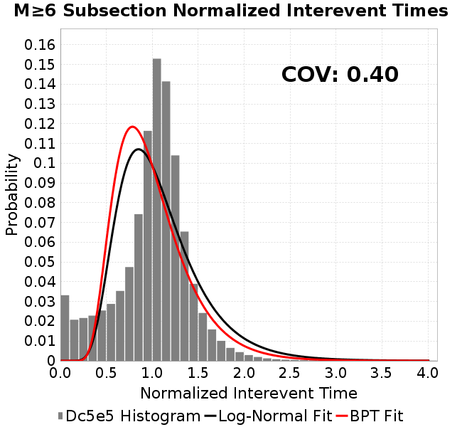
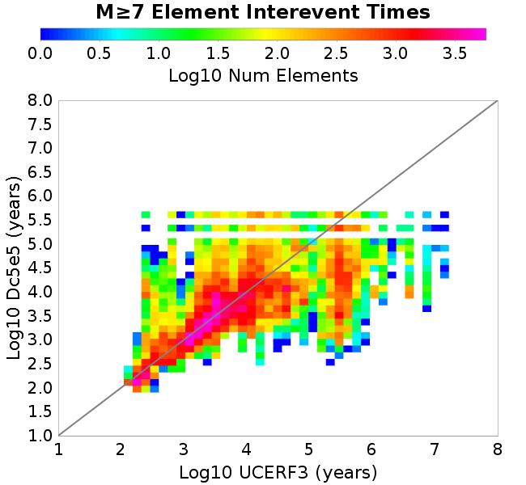
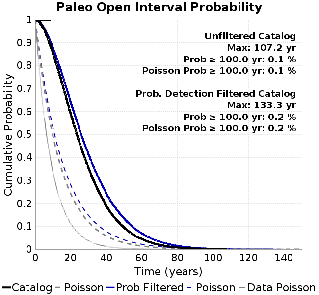

| Catalog | Dc5e5 |
|---|---|
| Author | Jaqcui Gilchrist, 2018/09/27 |
| Description | change Dc: Dc=5.00E-05 |
| Fault/Def Model | Fault Model 3.1, Geologic |
| Slip Velocity | 1.0 m/s |
| Average Element Area | 1.35 km^2 |
| Length | 7,686,303 events in 381,346 years |
| Frictional Params | a=0.001, b=0.008, (b-a)=0.007, ddotEQ=1 |
| Scatter | 2-D Hist |
|---|---|
 |  |
| Scatter | 2-D Hist |
|---|---|
 |  |
| Scatter |  |
|---|---|
| Distance/Velocity |  |
| M≥6 | M≥6.5 | M≥7 | M≥7.5 |
|---|---|---|---|
 |  |  |
| M≥6 | M≥6.5 | M≥7 | M≥7.5 | |
|---|---|---|---|---|
| Elements | ||||
| Subsections |  |  | ||
| Sections |  |  |  |

| Min Mag | Scatter | 2-D Hist |
|---|---|---|
| M≥6.0 |  |  |
| M≥6.5 |  |  |
| M≥7.0 |  |  |
| M≥7.5 |  |
Subsections participate in a rupture if at least 20.0 % of its area ruptures
| Min Mag | Scatter | 2-D Hist |
|---|---|---|
| M≥6.0 |  |  |
| M≥6.5 |  |  |
| M≥7.0 |  |  |
| M≥7.5 |  |  |
These plots use the 5 paleoseismic sites identified in Biasi & Scharer (2019) on the Hayward, N. SAF, S. SAF, and SJC faults. By default, a rupture is counted at a paleo site if the nearest element (at the surface) slips any amount. We also alternatively apply a probability of detection model. Those results are marked as 'Prob. Filtered'.
Paleoseismic sites table:
| Site Name | Data MRI (yr) | Data Annual Rate | Catalog MRI (yr) | Catalog Annual Rate | Catalog Occurences | Prob Filtered Catalog MRI (yr) | Prob Filtered Catalog Annual Rate | Prob Filtered Catalog Occurences |
|---|---|---|---|---|---|---|---|---|
| HOG | 191.00 | 0.005235602 | 353.15 | 0.0028316425 | 1066 | 357.28 | 0.002798963 | 1053.7 |
| FRA | 119.00 | 0.008403362 | 114.79 | 0.0087115355 | 3279 | 120.53 | 0.00829669 | 3122.71 |
| COA | 181.00 | 0.005524862 | 173.56 | 0.0057617924 | 2169 | 186.30 | 0.0053676977 | 2020.58 |
| SCZ | 106.00 | 0.009433962 | 117.71 | 0.008495631 | 3197 | 136.84 | 0.0073075513 | 2749.89 |
| TYS | 329.00 | 0.0030395137 | 336.96 | 0.0029677462 | 1115 | 373.80 | 0.0026752036 | 1005.12 |
| TOTAL | 31.61 | 0.0316373 | 34.76 | 0.02876794 | 10826 | 37.82 | 0.026441216 | 9950.48 |
Paleoseismic Plots:
 |
|---|
Open interval probabilities table:
| Open Interval (yr) | Catalog Probability | Catalog Poisson Probability | Prob. Filtered Catalog Probability | Prob. Filtered Catalog Poisson Probability | Data Poisson Probability |
|---|---|---|---|---|---|
| 10.00 | 0.97232074 | 0.750002 | 0.9764206 | 0.7676571 | 0.72878754 |
| 20.00 | 0.89652765 | 0.562503 | 0.9103953 | 0.5892974 | 0.53113127 |
| 30.00 | 0.78872526 | 0.42187837 | 0.81555915 | 0.4523783 | 0.3870819 |
| 40.00 | 0.66922224 | 0.31640962 | 0.7080809 | 0.3472714 | 0.28210047 |
| 50.00 | 0.5487209 | 0.23730786 | 0.59718347 | 0.26658535 | 0.2055913 |
| 60.00 | 0.42740452 | 0.17798136 | 0.48319647 | 0.20464614 | 0.14983238 |
| 70.00 | 0.3191232 | 0.13348638 | 0.3773666 | 0.15709805 | 0.10919597 |
| 80.00 | 0.22225146 | 0.10011505 | 0.27897748 | 0.12059744 | 0.079580665 |
| 90.00 | 0.15080538 | 0.07508649 | 0.20212615 | 0.09257747 | 0.057997398 |
| 100.00 | 0.098741315 | 0.05631502 | 0.14005566 | 0.07106775 | 0.04226778 |
| 110.00 | 0.056614187 | 0.042236377 | 0.089295514 | 0.054555662 | 0.030804234 |
| 120.00 | 0.028113075 | 0.031677365 | 0.050874077 | 0.04188004 | 0.022449743 |
| 130.00 | 0.011384186 | 0.02375809 | 0.02482981 | 0.03214951 | 0.016361093 |
| 140.00 | 0.002624414 | 0.017818615 | 0.0084073795 | 0.024679799 | 0.011923761 |
| 150.00 | 0.0 | 0.0133639965 | 0.002947286 | 0.018945623 | 0.008689889 |
| 160.00 | 0.0 | 0.010023024 | 0.0016558856 | 0.014543741 | 0.0063330824 |
| 170.00 | 0.0 | 0.007517288 | 8.626651E-4 | 0.011164606 | 0.0046154717 |
| 180.00 | 0.0 | 0.005637981 | 3.9991824E-4 | 0.008570588 | 0.0033636983 |
| 190.00 | 0.0 | 0.004228497 | 1.7992455E-4 | 0.006579273 | 0.0024514215 |
| 200.00 | 0.0 | 0.0031713813 | 4.6453697E-5 | 0.0050506257 | 0.0017865654 |
| 210.00 | 0.0 | 0.0023785422 | 0.0 | 0.0038771485 | 0.0013020267 |
These plots use the full set of UCERF3 paleoseismic sites. By default, a rupture is counted at a paleo site if the nearest element (at the surface) slips any amount. We also alternativeslyapply a probability of detection model. Those results are marked as 'Prob. Filtered'.
Paleoseismic sites table:
| Site Name | Data MRI (yr) | Data Annual Rate | Catalog MRI (yr) | Catalog Annual Rate | Catalog Occurences | Prob Filtered Catalog MRI (yr) | Prob Filtered Catalog Annual Rate | Prob Filtered Catalog Occurences |
|---|---|---|---|---|---|---|---|---|
| SSanAndreasBurroFlats | 205.44 | 0.0048677 | 207.62 | 0.004816428 | 1813 | 235.52 | 0.0042459695 | 1598.14 |
| SSanAndreasIndio | 277.37 | 0.0036053 | 170.34 | 0.005870756 | 2210 | 181.63 | 0.0055057397 | 2072.53 |
| SSAFMCreek1000Palms | 261.33 | 0.0038266 | 1506.20 | 6.639216E-4 | 250 | 2230.20 | 4.4839093E-4 | 168.46 |
| NSanAndreasFortRoss | 306.28 | 0.003265 | 183.67 | 0.0054445686 | 2049 | 186.27 | 0.0053684567 | 2020.33 |
| NSanAndreasNorthCoast | 263.87 | 0.0037898 | 175.28 | 0.0057050996 | 2147 | 180.38 | 0.0055437884 | 2086.28 |
| CalaverasfaultNorth | 618.05 | 0.001618 | 159.25 | 0.006279384 | 2363 | 232.17 | 0.00430713 | 1620.56 |
| ElsinoreTemecula | 1019.16 | 9.812E-4 | 672.72 | 0.0014864934 | 560 | 697.32 | 0.0014340527 | 540.16 |
| ElsinoreWhittier | 3196.93 | 3.128E-4 | 1453.49 | 6.8800076E-4 | 259 | 1543.55 | 6.478567E-4 | 243.8 |
| SSAFCarrizoBidart | 114.71 | 0.0087179 | 117.93 | 0.008479293 | 3191 | 121.47 | 0.0082326 | 3098.17 |
| SanJacintoHogLake | 311.78 | 0.0032074 | 353.15 | 0.0028316425 | 1066 | 357.13 | 0.0028000777 | 1054.09 |
| PuenteHills | 3506.31 | 2.852E-4 | 4985.27 | 2.0059083E-4 | 76 | 5391.31 | 1.8548357E-4 | 70.27 |
| SanGregorioNorth | 1019.06 | 9.813E-4 | 393.83 | 0.0025391686 | 956 | 406.04 | 0.0024627883 | 927.24 |
| SanJacintoSuperstition | 508.26 | 0.0019675 | 1182.42 | 8.457198E-4 | 318 | 1271.87 | 7.862444E-4 | 295.65 |
| SSanAndreasWrightwood | 106.04 | 0.0094304 | 148.40 | 0.0067383656 | 2536 | 150.33 | 0.0066521685 | 2503.56 |
| SSanAndreasPitmanCanyon | 173.48 | 0.0057643 | 137.45 | 0.0072753085 | 2738 | 155.03 | 0.006450537 | 2427.63 |
| SSanAndreasPlungeCreek | 205.36 | 0.0048695 | 351.93 | 0.0028414435 | 1070 | 436.34 | 0.002291788 | 862.91 |
| FrazierMountianSSAF | 148.57 | 0.0067307 | 114.79 | 0.0087115355 | 3279 | 120.54 | 0.008296326 | 3122.42 |
| NSanAndreasSantaCruzSeg | 109.84 | 0.0091041 | 117.71 | 0.008495631 | 3197 | 136.91 | 0.0073040016 | 2748.6 |
| RodgersCreek | 325.31 | 0.003074 | 162.41 | 0.006157122 | 2317 | 224.45 | 0.0044552833 | 1676.37 |
| GreenValleyMasonRoad | 293.31 | 0.0034094 | 1678.64 | 5.9571856E-4 | 224 | 2283.52 | 4.3792027E-4 | 164.58 |
| HaywardfaultNorth | 318.34 | 0.0031413 | 357.98 | 0.0027934152 | 1051 | 369.52 | 0.0027061806 | 1018.12 |
| HaywardfaultSouth | 167.57 | 0.0059677 | 336.96 | 0.0029677462 | 1115 | 373.72 | 0.002675826 | 1005.35 |
| Compton | 2658.16 | 3.762E-4 | 5307.46 | 1.8841404E-4 | 71 | 6029.43 | 1.6585307E-4 | 62.55 |
| SSanAndreasCoachella | 178.45 | 0.0056037 | 173.56 | 0.0057617924 | 2169 | 186.05 | 0.005374843 | 2023.27 |
| ElsinoreGlenIvy | 179.12 | 0.0055828 | 562.82 | 0.0017767614 | 668 | 613.00 | 0.0016313199 | 613.34 |
| GarlockCentralallevents | 1434.93 | 6.969E-4 | 627.72 | 0.0015930672 | 599 | 637.42 | 0.0015688332 | 589.82 |
| NSanAndreasAlderCreek | 869.64 | 0.0011499 | 184.93 | 0.0054073497 | 2035 | 187.63 | 0.0053296685 | 2005.76 |
| SSanAndreasPallettCreek | 149.30 | 0.006698 | 148.52 | 0.0067330496 | 2534 | 150.26 | 0.0066551184 | 2504.66 |
| GarlockWesternallevents | 1230.16 | 8.129E-4 | 803.69 | 0.0012442563 | 468 | 826.20 | 0.0012103585 | 455.27 |
| ElsinoreFaultJulian | 3250.98 | 3.076E-4 | 1208.11 | 8.2773826E-4 | 311 | 1234.02 | 8.103615E-4 | 304.44 |
| TOTAL | 9.08 | 0.1101451 | 14.02 | 0.07132109 | 26842 | 15.63 | 0.06397189 | 24076.2 |
Paleoseismic Plots:
 |  |
|---|
Open interval probabilities table:
| Open Interval (yr) | Catalog Probability | Catalog Poisson Probability | Prob. Filtered Catalog Probability | Prob. Filtered Catalog Poisson Probability | Data Poisson Probability |
|---|---|---|---|---|---|
| 10.00 | 0.85148704 | 0.4900681 | 0.8748085 | 0.52744067 | 0.33238843 |
| 20.00 | 0.58638406 | 0.24016675 | 0.63762206 | 0.27819365 | 0.110482074 |
| 30.00 | 0.3530621 | 0.117698066 | 0.41243482 | 0.14673065 | 0.036722966 |
| 40.00 | 0.18800081 | 0.057680067 | 0.24184127 | 0.07739171 | 0.012206289 |
| 50.00 | 0.09369448 | 0.028267162 | 0.13338336 | 0.040819533 | 0.004057229 |
| 60.00 | 0.04395756 | 0.013852835 | 0.06859326 | 0.021529883 | 0.001348576 |
| 70.00 | 0.019793747 | 0.0067888326 | 0.033787355 | 0.011355735 | 4.4825108E-4 |
| 80.00 | 0.008102145 | 0.0033269902 | 0.015279022 | 0.0059894766 | 1.4899348E-4 |
| 90.00 | 0.003473618 | 0.0016304519 | 0.0066463705 | 0.0031590937 | 4.952371E-5 |
| 100.00 | 8.842813E-4 | 7.9903245E-4 | 0.0024561856 | 0.0016662345 | 1.6461108E-5 |
| 110.00 | 0.0 | 3.915803E-4 | 3.5328692E-4 | 8.788398E-4 | 5.4714824E-6 |
| 120.00 | 0.0 | 1.9190102E-4 | 4.8281487E-5 | 4.6353586E-4 | 1.8186574E-6 |
| 130.00 | 0.0 | 9.4044575E-5 | 1.595399E-5 | 2.4448766E-4 | 6.045007E-7 |
| 140.00 | 0.0 | 4.6088247E-5 | 0.0 | 1.2895273E-4 | 2.0092905E-7 |
We first create a tapered moment release time series for the entire catalog. Each event's moment is distributed across a 25 year Hanning (cosine) taper. Here is a plot of a random 2,000 year section of this time series:

We then compute Welch's power spectral density estimate on the entire time series. Results are plotted below, with a Poisson randomization of the catalog also plotted in a gray line, and the 95% confidence bounds from 200 realizations as a light gray shaded area. Significant deviations outside the Poisson confidence intervals indicate synchronous behaviour.

A_1 = 0.001
fA = .1
B_1 = 0.008
muSlipAmp_1 = .0
muSlipInvDist_1 = 1.0
cohesion = 0.0
Dc_1 = 5.0000000000000000818e-05
mu0_1 = 0.6
ddotStar_1 = 9.9999999999999995475e-07
ddotAB_1 = 9.9999999999999995475e-07
alpha_1 = 0.0
theta0_1 = 200000000
tau0_1 = 55.1
sigma0_1 = 100
sigmaFracPin = .5
lowSigmaAction = 1
maxThetaPin = 1.0e13
ddotEQ_1 = 1
ddotEQFname =
stressOvershootFactor = 0.10000000000000000555
lameLambda = 30000
lameMu = 30000
slowSlip_1 = 0
nEq = 100000000000
KZeroFrac = 0
muPin = 1.0
tStart = 0
maxT = 3.16e13
maxWallTime = 169200
maxTrans = 1.0000000000000000159e100
faultFname = UCERF3FM.15km.1km.tri.flt
outFnameInfix = Dc5e5
writeTau = 2
writeSigma = 2
writeSlip = 0
writeSlipSpeed = 0
writeState = 0
writeTheta = 2
writePED = 1
writeTransitions = 1
minDtWrite = 0
minDtWriteCoseismic = 0
minDtWriteInterseismic = 0
minMagWrite = 7.7
writeStiffness = 0
stressRateSpecification = 1
dMu3 = 0.01000000000000000
initTauFname =
initSigmaFname =
initThetaFname =
initSlipSpeedFname =
AFname =
BFname =
DcFname =
mu0Fname =
ddotStarFname =
ddotABFname =
alphaFname =
KTauFname = /u/sciteam/gilchris/scratch/stiffness_25a589d/Ktau.25a589d.out
KSigmaFname = /u/sciteam/gilchris/scratch/stiffness_25a589d/Ksigma.25a589d.out
tFailFname =
tauFailFname =
tauDotFname =
sigmaDotFname =
KZeroFname = UCERF3FM.15km.1km.tri.KZero
pinnedFname = UCERF3FM.15km.1km.tri.pin
neighborFname = UCERF3FM.15km.1km.tri.neighbors
stressRateFname =
slowSlipFname =
writePatchFname =
DEBUG = 0
ZBrentUpperBracket = 0
receiverElementAreaFrac = 0.8
receiverElementIntTol = 1.0e-4
receiverElementSubdivisionMax = 4
tgfDist1 = 3
tgfDist1 = 10
lowSigmaAction = 1
highSigmaAction = 0